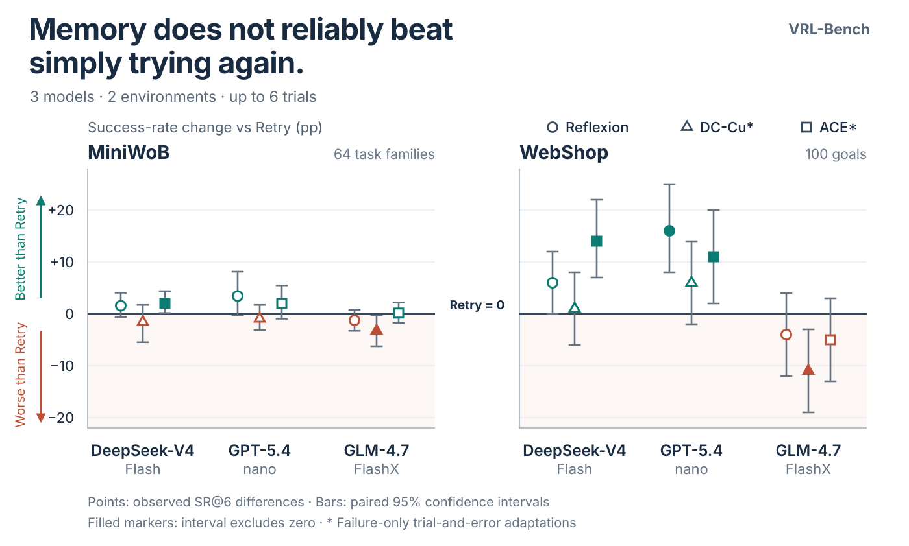
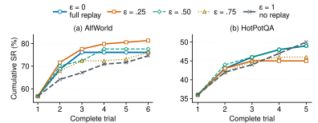
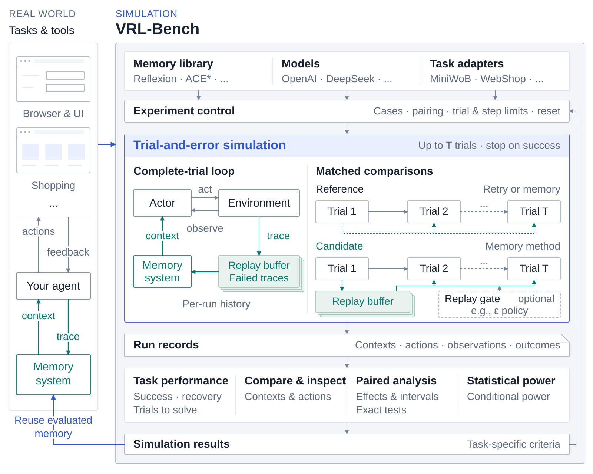

Match the conditions.
Keep actors, task cases, reset rules, trial budgets, and interaction limits consistent while changing the memory method.
A UNIFIED SIMULATOR FOR AGENT MEMORY SYSTEMS
Compare agent memory methods using the same tasks, models, and budgets.
From NASP, Tsinghua University
TRIAL-AND-ERROR REPLAY
Step through the agent’s actions, memory, and budgets. The replay opens at Trial 2, where the agent receives a reflection on its failed first attempt.
RECORDED RUN
Actual saved pages, actions, and memory. Playback makes no model calls.
CONTROLLED MEMORY EVALUATION
Across three models on MiniWoB and WebShop, leading memory methods improve success in some settings and reduce it in others. Fair trial budgets make these differences visible.



Read the findings and experimental settings
EXPLORATION & EXPLOITATION
Retained experience can guide an agent—and displace useful exploration. Reflection-exposure experiments revealed this tension in verbal reinforcement learning.
Control experience exposure with the Replay gate, or study an integrated scheduler such as VEX².
Explore the exposure experiments ↗
A FAIR PLACE TO STUDY AGENT MEMORY
In verbal reinforcement learning, an agent turns interaction feedback into language-based experience for later attempts. VRL-Bench provides a common simulation workflow for developing and comparing these memory systems.
Keep actors, task cases, reset rules, trial budgets, and interaction limits consistent while changing the memory method.
Inspect what reaches the next trial, what the agent does, and how it uses its remaining opportunities.
Measure success, recovery, and trials to solve. Use paired intervals, exact tests, and conditional power to interpret comparisons.

BUILD ON A COMMON FOUNDATION
Use a reference method, connect your own implementation, and improve it from task-level feedback. Compare a new version with the previous one under the same conditions.
* Adapted to failure-only trial and error. Memory-free Retry is included as a common exploration baseline.
Run memory-free Retry on your tasks.
Evaluate the complete implementation.
Compare each candidate with its predecessor.
OFFLINE QUICKSTART
See how a rule-based agent uses feedback from a failed attempt. You’ll need Python 3.10+. The example runs without a model API key or benchmark downloads.
git clone https://github.com/vrl-bench/vrlbench.git
cd vrlbench
python3 -m venv .venv
. .venv/bin/activate
python -m pip install -e '.[runtime]'
vrlbench simulate --config examples/configs/local_retry.json
vrlbench simulate --config examples/configs/local_feedback.json
vrlbench inspect runs/local_feedback --case case_b
vrlbench compare runs/local_retry runs/local_feedbackThis example illustrates how memory changes the agent’s next attempt. Use fresh run directories if you repeat it.